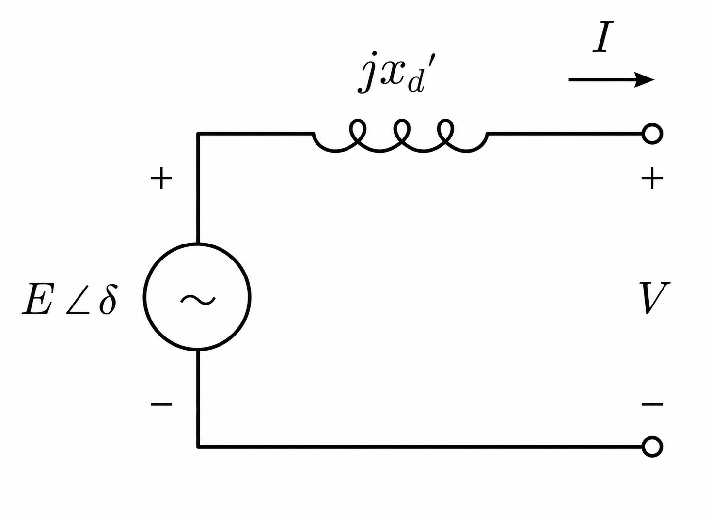
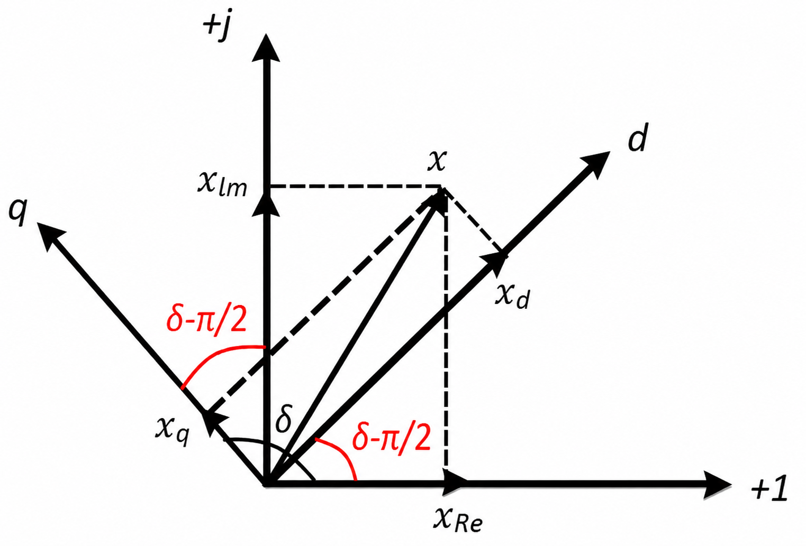

3. Generator models
TSCOPF couples dispatch to transient constraints through a machine model at each generator bus. Two orders are implemented today:
- Classical second-order (
gen_order = CLASSICAL_2ND) — one internal voltage $E'$ behind transient reactance $x'_d$; states $\delta_g$ and $\Delta\omega_g$. Default on Kron and FULL_BUS. - Fourth-order $dq$ (
gen_order = DQ_4TH) — two-axis transient emfs $E'_d$, $E'_q$ with stator algebraic balance; states $\delta_g$, $\Delta\omega_g$, $E'_{d,g}$, $E'_{q,g}$ plus currents $I_{d,g}$, $I_{q,g}$. FULL_BUS TSC-ACOPF only.
Swing discretisation and COI bounds are identical in structure across orders; see 5. Swing dynamics and discretization. Optional AVR and governor layers are in 8. Machine controls, and grid-forming converters in 9. Grid-forming inverters.
| Symbol | Meaning |
|---|---|
| $E'$, $x'_d$ | Classical internal voltage and transient reactance (Xd_tr) |
| $E'_{d,g}$, $E'_{q,g}$ | $dq$ transient emfs on the $d$ and $q$ axes (Ed, Eq in code) |
| $I_{d,g}$, $I_{q,g}$ | Stator currents in the rotor $dq$ frame |
| $x'_{d,g}$, $x'_{q,g}$ | Transient reactances (Xd_tr, Xq_tr) |
| $x_{d,g}$, $x_{q,g}$ | Synchronous reactances (Xd, Xq) |
| $T'_{d0,g}$, $T'_{q0,g}$ | Open-circuit transient time constants (Td, Tq) |
| $r_{a,g}$ | Stator resistance (Ra) |
| $E_{fd,g}$ | Field voltage (constant, or AVR-driven on DQ_4TH) |
| $H_g$, $D_g$ | Inertia [s] and damping |
Select the order with DynModelConfig.gen_order. Machine columns live in gen_dynamic_data.csv (classical minimum) or gen_dynamic_data_full.csv ($dq$ and controls).
Classical second-order model

The whole of the classical model, electrically. $E\angle\delta$ is the internal emf held constant through the transient (E in code, magnitude bounded by TsBoundLimitsConfig.E_min_pu/E_max_pu when bound_E = true), $jx'_d$ is the transient reactance Xd_tr, and $V$ is the terminal — the Kron-reduced fictitious node, or the FULL_BUS network bus $k(g)$. There is no stator resistance and no $q$-axis: the machine is one source behind one reactance, and all of its dynamics sit in the rotor equations below.
The classical model is the standard single-circuit representation used in many power-system texts: a constant voltage source $E'_g \angle \delta_g$ behind transient reactance $x'_{d,g}$, with rotor angle $\delta_g$ and per-unit speed deviation $\Delta\omega_g$ as states. Electrical torque enters through active power $P_g^{\mathrm{ele}}$ (Kron reduced sum or classical terminal map on FULL_BUS).
\[\begin{equation} \label{eq:classical-schematic} P_g^{\mathrm{ele}} = \frac{E'_g V_{k(g)}}{x'_{d,g}} \sin(\delta_g - \theta_{k(g)}), \qquad \frac{2H_g}{\omega_s}\frac{d\Delta\omega_g}{dt} = P_{m,g} - P_g^{\mathrm{ele}} - D_g \Delta\omega_g, \qquad \frac{d\delta_g}{dt} = \omega_s \Delta\omega_g . \end{equation}\]
On the Kron path, $P_g^{\mathrm{ele}}$ during the swing is the pairwise admittance sum (Model 6.5 on page 6), not the two-bus formula above. The schematic $\eqref{eq:classical-schematic}$ is the steady-state initial link (Models 6.1–6.2).
Parameters: Xd_tr, H, D per generator. Paths: KRON_REDUCED (default) and FULL_BUS with mech_power_mode = USE_PG or USE_PM.
For textbook derivations of the round-rotor classical model, see standard references such as Kundur (Power System Stability and Control) or any power-system analysis text on the swing equation.
Fourth-order two-axis model
The fourth-order model (also called a two-axis or $dq$ model) keeps separate transient dynamics on the direct and quadrature axes. It is more realistic than Model 3.1 when you need terminal voltage and current to co-evolve with the swing during a fault. TSCOPF follows the usual simplification: subtransient dynamics are neglected by assuming damper-winding transients are fast enough to settle (Weckesser et al.; Liederer et al. on TSC formulations).
The machine is represented by transient emfs $E'_{d,g}$, $E'_{q,g}$ behind transient reactances $x'_{q,g}$, $x'_{d,g}$ and stator resistance $r_{a,g}$. The four differential states are $E'_{q,g}$, $E'_{d,g}$, $\Delta\omega_g$, and $\delta_g$. Stator currents $I_{d,g}$, $I_{q,g}$ are additional algebraic (or coupled) variables at each time step on the FULL_BUS path.
Terminal $d$–$q$ voltages are the Park components of bus voltage $V_{k(g)}$, $\theta_{k(g)}$ in the rotor frame: $V_{d} = V_{k(g)}\sin(\delta_g - \theta_{k(g)})$, $V_{q} = V_{k(g)}\cos(\delta_g - \theta_{k(g)})$.

The frame convention behind those two projections, and the one place where a sign slip is easy. A network phasor $x = x_{\mathrm{Re}} + jx_{\mathrm{Im}}$ is resolved on a rotor frame whose $d$ axis leads the real axis by $\delta - \pi/2$ and whose $q$ axis leads $d$ by a further $\pi/2$ — equivalently, the $q$ axis sits at angle $\delta$. Substituting $x = V_{k}e^{j\theta_k}$ gives exactly $V_d = V_k\sin(\delta - \theta_k)$ and $V_q = V_k\cos(\delta - \theta_k)$: the sine goes with $d$ and the cosine with $q$, which is the opposite of the convention some references use. The same projection defines $I_{d,g}$, $I_{q,g}$, and the inverse map is what returns machine currents to the nodal balance in eq_const_dq_Pbalance! / eq_const_dq_Qbalance!. Grid-forming converters (chapter 9) reuse this frame unchanged, which is why a mixed fleet needs no special-casing in the nodal balance.
Stator voltage balance
For generator $g$ at terminal bus $k(g)$,
\[\begin{align} V_{d,k} &= (1+\Delta\omega_g)\, E'_{d,g} - r_{a,g} I_{d,g} + x'_{q,g} I_{q,g} \label{eq:dq-vd} \\ V_{q,k} &= (1+\Delta\omega_g)\, E'_{q,g} - r_{a,g} I_{q,g} - x'_{d,g} I_{d,g} \label{eq:dq-vq} \end{align}\]
Equations $\eqref{eq:dq-vd}$–$\eqref{eq:dq-vq}$ are the stator voltage balance on each axis. Terminal voltage on axis $d$ (or $q$) depends on the internal emf induced by the rotor, the ohmic drop in the stator winding, and inductive coupling from the orthogonal axis current.
eq_const_dq_machine_algebra! stamps these rows each transient step. The factor $1+\Delta\omega_g$ is controlled by dq_speed_dev_in_algebra (default true, RMS-style); set false to drop speed from stator and power equations (common small-signal simplification; Glover, Sarma, Overbye).
Transient emf dynamics
\[\begin{align} T'_{d0,g}\,\frac{dE'_{q,g}}{dt} &= E_{fd,g} - E'_{q,g} - (x_{d,g} - x'_{d,g})\, I_{d,g} \label{eq:dq-eq-ode} \\ T'_{q0,g}\,\frac{dE'_{d,g}}{dt} &= -E'_{d,g} + (x_{q,g} - x'_{q,g})\, I_{q,g} \label{eq:dq-ed-ode} \end{align}\]
\[E'_{q,g}\]
is tied to the $d$-axis flux equation $\eqref{eq:dq-eq-ode}$ because terminal voltage on the $q$ axis is induced 90° ahead of the flux; $E'_{d,g}$ plays the symmetric role on $\eqref{eq:dq-ed-ode}$. The field voltage $E_{fd,g}$ appears on the $d$ axis because the exciter acts in line with the direct axis.
The terms $-E'_{q,g}$ and $-E'_{d,g}$ capture flux decay through field and damper resistance. Stator-reaction terms of the form $x-x'$ times axis current oppose abrupt flux changes. $T'_{d0,g}$ and $T'_{q0,g}$ set how fast transient flux decays.
During the transient, eq_const_dq_emf_dynamics! discretises $\eqref{eq:dq-eq-ode}$–$\eqref{eq:dq-ed-ode}$ with the same implicit trapezoidal rule used for the swing on page 5. With include_avr = false, $E_{fd,g}$ is constant at the pre-fault value.
Rotor motion
The swing pair matches Model 5.1:
\[\begin{equation} \label{eq:dq-swing} \frac{d\delta_g}{dt} = \omega_s \Delta\omega_g, \qquad \frac{2H_g}{\omega_s}\frac{d\Delta\omega_g}{dt} = P_{m,g} - P_{g}^{\mathrm{ele}} - D_g \Delta\omega_g . \end{equation}\]
Trapezoidal rows are shared with the classical path (eq_const_kron_δ_swingeq_generic!, eq_const_tsred_Δω_swingeq_generic! on FULL_BUS builders).
Electrical torque and power
\[\begin{align} T^{\mathrm{ele}}_g &= E'_{d,g} I_{d,g} + E'_{q,g} I_{q,g} \label{eq:dq-te} \\ P_{g}^{\mathrm{ele}} &= (1+\Delta\omega_g)\, T^{\mathrm{ele}}_g \label{eq:dq-pe} \\ Q_g &= V_{q,k}\, I_{d,g} - V_{d,k}\, I_{q,g} \label{eq:dq-q} \end{align}\]
With dq_speed_dev_in_algebra = false, $\eqref{eq:dq-pe}$ reduces to $P_{g}^{\mathrm{ele}} = T^{\mathrm{ele}}_g$ and the speed factor is removed from $\eqref{eq:dq-vd}$–$\eqref{eq:dq-vq}$ as well.
Further simplifications sometimes used in textbooks — $r_{a,g} = 0$ or a round rotor with $x'_{d,g} = x'_{q,g}$ — are parameter choices in the CSV, not separate code paths.
Coupling to the network
Unlike the classical FULL_BUS map (active power as a function of $E'$, $V$, $\delta$ only), the $dq$ path injects currents into nodal KCL:
- Active balance uses $P$-injection from $I_d$, $I_q$, $V$, $\theta$, $\delta$ (
eq_const_dq_Pbalance!). - Reactive balance is analogous (
eq_const_dq_Qbalance!).
Pre-fault, eq_const_dq_init_steady_state! pins the machine to the solved ACOPF point — bus voltage, angle, and dispatch $P_g$, $Q_g$. Warm starts use dq_machine_warmstart to project complex terminal voltage and current into field voltage, rotor angle, emfs, and $dq$ currents.
DQ_4TH requires network_form = FULL_BUS, mech_power_mode = USE_PM, and bound_style = :coi_box. TSC-DCOPF and Kron reduction are not implemented for this order.
Parameter files
| Column | Classical | $dq$ (gen_dynamic_data_full.csv) |
|---|---|---|
Xd_tr | yes | yes ($x'_d$) |
H, D | yes | yes |
Xq_tr | — | yes ($x'_q$) |
Xd, Xq | — | yes |
Td, Tq | — | yes ($T'_{d0}$, $T'_{q0}$) |
Ra | — | yes ($r_a$) |
T_exc, K_exc | — | AVR only |
R, T1–T3 | — | governor only |
Worked example
cfg_dq = RunConfig(
trans_stab = true, case = "9bus", solver_name = "Ipopt",
dispatch = DispatchConfig(type_model = "ACOPF"),
transient = TransientConfig(
simulation = TsSimulationConfig(δ_tol_deg = 90.0),
dyn_model = DynModelConfig(
gen_order = DQ_4TH,
network_form = FULL_BUS,
mech_power_mode = USE_PM,
bound_style = :coi_box,
gen_dynamic_filename = "gen_dynamic_data_full.csv",
zip_load_p = (1.0, 0.0, 0.0), # (Z, I, P) — active demand, constant impedance
zip_load_q = (1.0, 0.0, 0.0), # (Z, I, P) — reactive demand, constant impedance
fault = FaultConfig(contingency_id = 2),
),
),
)Compare trajectories in Transient_Stability/CSV/generator_*.csv (including Ed, Eq, Id, Iq) against the classical Kron preset in Example 5.1 on page 5. Expect different $P_g^{\mathrm{ele}}$ paths during the fault because reactive balance and axis flux dynamics are explicit.
Where this lives in the code
| Piece | Function | File |
|---|---|---|
| Classical Kron / FULL_BUS builders | Make_Dynamic_Model_tsred!, Make_Dynamic_Model_fullbus! | functions_2_build_TS_model_w_Kron.jl, functions_2_build_TS_model_w_FullBus.jl |
| $dq$ FULL_BUS builder | Make_Dynamic_Model_dqfullbus! | functions_2_build_TS_model_w_DqFullBus.jl |
| Pre-fault $dq$ steady state | eq_const_dq_init_steady_state! | functions_4_TS_dq_eqconst.jl |
| $\eqref{eq:dq-vd}$–$\eqref{eq:dq-pe}$ | eq_const_dq_machine_algebra! | functions_4_TS_dq_eqconst.jl |
| $\eqref{eq:dq-eq-ode}$–$\eqref{eq:dq-ed-ode}$ (trapezoidal) | eq_const_dq_emf_dynamics! | functions_4_TS_dq_eqconst.jl |
| Nodal injection | eq_const_dq_Pbalance!, eq_const_dq_Qbalance! | functions_4_TS_dq_eqconst.jl |
| ACOPF → $dq$ warm start | dq_machine_warmstart | functions_4_TS_dq_helpers.jl |
| Order selection | DynModelConfig.gen_order | DynModelConfig.jl |
| Grid-forming (GFM) attachers | Attach_GFM_init! / _fault! / _postf! | functions_4_TS_gfm.jl |
Beyond the machine core
Two extensions sit outside this chapter because they change what a "generator" is rather than how a machine is modelled:
- Control loops — an AVR that moves $E_{fd,g}$ and a TGOV1 governor that turns the constant $P_{m,g}$ into a trajectory. Both wrap around the machine models above without altering them. See 8. Machine controls: AVR and turbine governor.
- Grid-forming converters — units with no rotor at all, whose frequency follows an algebraic droop law rather than a swing equation, sharing the same $dq$ interface and the same nodal balance as the machines here. See 9. Grid-forming inverters.
The assembled TSC-OPF with classical machines is on 6. The TSC-OPF, assembled.